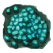
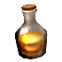
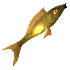

Циановый элемент
Предметы / Сырьё
Открыть в интерактивной вики →
| Вес | 4 |
|---|---|
| Цена | 0 |
Описание
Требуется для создания рецептурных питомцев и задания на ошейник.
| Полуфабрикат для разных рецептов. Циановый элемент можно изготовить многими способами. |
Рецепт
Создание: 30x

Живица + 20x
Светящаяся рыба + 40kГде создать

Применение
Способы получения
|
Изготовление
Изготавливает Фрахлумп в Норе двейров за 40 000 золота после доставки ингредиентов:
|